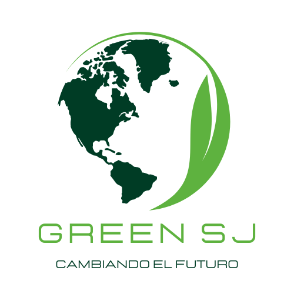
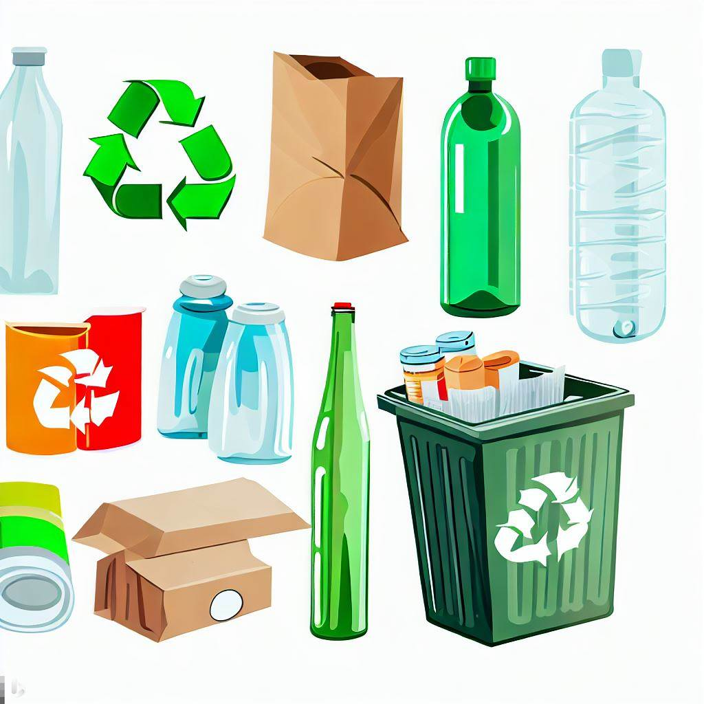

APP
- Descarga Green SJ y únete a la revolución ecológica en San Juan. Encuentra contenedores de reciclaje, recibe recordatorios para contribuir al reciclaje y mantente informado sobre prácticas sostenibles. ¡Haz tu parte por un San Juan más limpio y verde!"

MAS SOBRE LA APP
- Localización Precisa
- Encuentra fácilmente los contenedores de reciclaje y puntos verdes en tu área, gracias a un mapa interactivo que muestra su ubicación exacta.
- Información Detallada

- Accede a información relevante sobre qué tipos de residuos puedes depositar en cada contenedor y cuáles son las opciones de reciclaje disponibles en los puntos verdes.
- Recordatorios Personalizados
- Configura recordatorios automáticos para sacar la basura reciclable en los días designados, lo que te ayudará a mantener un hábito sostenible.
- Seguimiento de Contribución
- Lleva un registro de tus contribuciones al reciclaje y la gestión de residuos, y observa cómo tu participación contribuye a un San Juan más limpio y saludable.